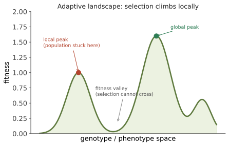

演化 I · 选择的形式化
证据地位：【实】——自然选择的核心逻辑可形式化证明，经验证据压倒性。 自然选择常被当作一个定性的故事（"适者生存"）。本页把它变成数学。核心洞见是：自然选择不是一条生物学定律，而是一个几乎纯逻辑的推论——只要满足三个条件，选择就必然发生，无论载体是 DNA、文化、还是算法里的候选解。
一、三个条件
达尔文的论证可以压缩成三条前提：
- 变异：个体间存在差异；
- 遗传：差异部分可传给后代；
- 差异繁殖：某些差异影响留下后代的数量。
若三者同时成立，则群体组成必然随世代改变，且趋向于提高平均繁殖成功度。 这是一个逻辑必然，不依赖任何特定的生物化学——这正是为什么同样的逻辑能用在遗传算法、抗体亲和力成熟（线二第四页）、癌细胞演化（本线第六页）与文化传播上。
"适者生存"是个糟糕的口号：它容易被读成同义反复（谁活下来谁就是适者）。更准确的表述是"差异繁殖成功度"——关键不是活着，是留下后代。一只活得久但不繁殖的个体，在演化上等于零。
二、适应度：一个需要小心的概念
适应度（fitness）指某基因型的相对繁殖贡献。定义方式依语境而变：
三个容易踩的坑：
- 适应度是相对的、依环境的：镰状细胞杂合子在疟疾区有优势，在无疟疾区是负担。不存在绝对的"优良基因"。
- 适应度是统计期望，不是保证：承线三第二页——有 1% 优势的突变，固定概率也只有约 \(2s = 2\%\)。演化充满随机的失败。
- 适应度作用于什么层次：个体？基因？群体？下一节处理。
三、Price 方程：选择的通用会计
Price 方程是演化理论最普适的表述。对任意性状 \(z\)：
（\(w\) 为相对适应度）第一项说：性状与适应度的协方差，就是选择带来的改变。第二项涵盖传递不忠实（突变、减数分裂驱动、发育噪声）。
为什么它重要：Price 方程不假设任何遗传细节，是一个恒等式。它把"选择"精确定义为协方差，并能被递归展开以处理多层次选择（个体内、个体间、群体间），因而成为讨论亲缘选择与多层次选择的统一语言。
Fisher 基本定理是其特例："群体平均适应度的增长率等于其加性遗传方差"：
含义有二：没有遗传方差就没有选择响应（承线三第一页育种者方程）；以及选择本身消耗方差（它把有利等位推向固定），故长期演化依赖突变持续补充变异。
四、亲缘选择：利他行为的解
利他行为曾是达尔文理论的难题：为什么会有个体牺牲自己的繁殖来帮助他人？Hamilton 法则给出答案：
\(r\) 是遗传相关系数（亲子/全同胞 = 0.5，半同胞/叔侄 = 0.25，堂表亲 = 0.125），\(B\) 是受益者的适应度收益，\(C\) 是施惠者的代价。
关键概念转换：选择最大化的不是个体存活，而是广义适应度（inclusive fitness）——通过自己繁殖 + 帮助携带相同基因的亲属繁殖。Haldane 那句半开玩笑的话精确表达了它："我愿意为两个兄弟或八个堂表亲跳河。"
验证：膜翅目（蜂、蚁）的单倍二倍体性别决定使姐妹间 \(r=0.75\)（高于母女的 0.5），曾被用来解释真社会性的多次独立起源——这个解释现在有争议【争】（有人强调单雌交配与生态因素更关键），但 Hamilton 法则本身作为框架已被广泛接受与检验。
群体选择长期被主流拒斥（因为个体内的自私变异通常扩散更快），但在多层次选择的框架下（Price 方程可自然表达）重新获得有限度的严肃讨论——这仍是一个活跃的争论区【争】。
五、适应度景观
Wright 的适应度景观把基因型（或表型）空间映射到适应度的高度：

核心教训：选择是贪心算法，只能局部上坡。 它无法为了到达更高的峰而先下坡。于是演化常被困在局部最优——这就是线二反复出现的"设计缺陷"的根源之一：不是没有更好的方案，而是通往更好方案的路径要经过适应度低谷。
（🔗 与优化理论的对应极紧密：梯度上升、局部极值、模拟退火中的温度对应漂变。数学站/AI 站的读者会觉得亲切。）
六、约束与权衡：演化不能做什么
选择的力量常被高估。四类限制值得记住，它们是理解生物"不完美"的钥匙：
① 历史约束（路径依赖）：演化只能修改现有结构。脊椎动物眼睛的视网膜是"倒装"的（光感受器朝后，神经纤维在光路前方，造成盲点）；头足类的眼睛则是正装的。两者各自从不同起点演化，都已无法回头重来。
② 权衡（trade-off）：资源有限，投入繁殖就少投入维持（这是下一节与衰老的关键）；免疫强度与自身免疫风险相权衡（线二第四页）。
③ 拮抗多效性（antagonistic pleiotropy）：一个基因在生命早期有利、晚期有害。由于选择强度随年龄下降（繁殖后的效应几乎不受选择），这类基因会被保留——这是衰老演化理论的核心，线二第六页欠的债，在本线第六页结清。
④ 基因组与发育约束：突变不是任意方向可得的；发育程序限制了可能的表型变异。
综合起来：演化产生的是"在历史约束下、给定权衡下、局部可达的、足够好的"解，不是最优解。 这句话是理解人体一切别扭之处的总钥匙。
下一页：演化 II——中性理论。如果说本页讲的是选择的力量，下页讲的是它的沉默：分子层面的绝大多数变化，可能与选择无关。这个主张曾引发演化生物学史上最激烈的争论之一。